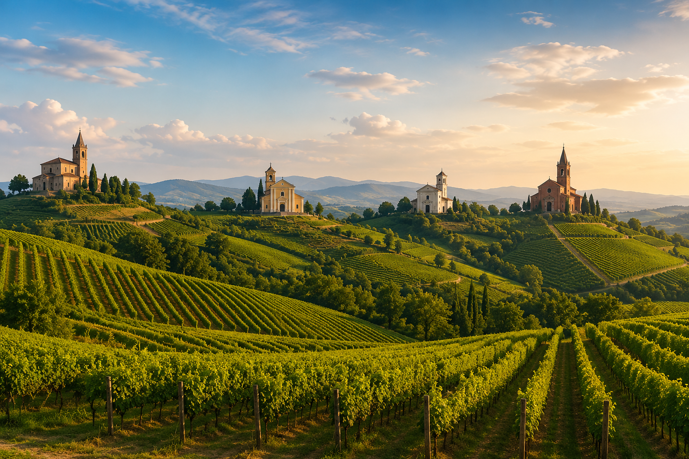

✝
La Comunità di don Marco
ANTIGNANO • CELLE • REVIGLIASCO • SAN MARTINO
Un piccolo spazio per restare uniti
nella fede e nella vita delle nostre comunità.
⛪
Orari Messe
Scopri gli orari delle Sante Messe
📱
Canale WhatsApp
Unisciti al canale per tutti gli avvisi
🏛️
Le nostre Chiese
Scopri le quattro parrocchie
📞
Contatti
Numeri utili e informazioni